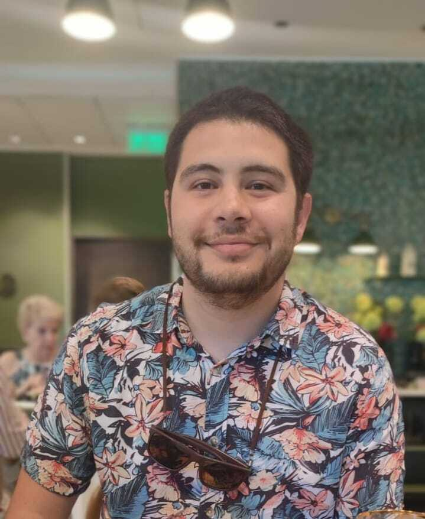
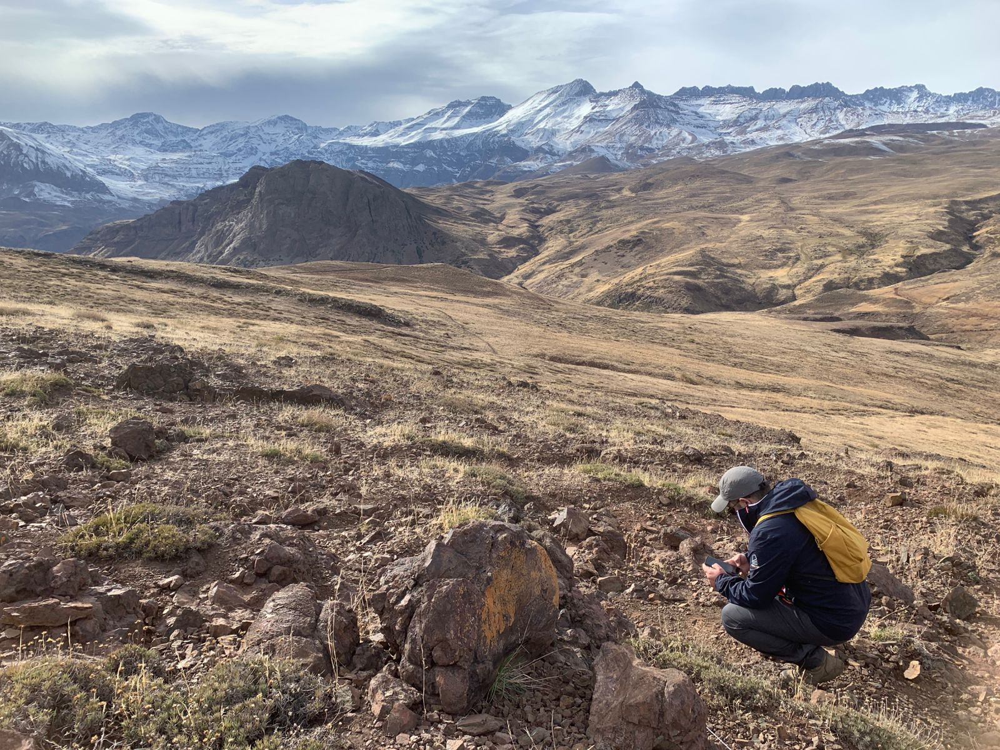
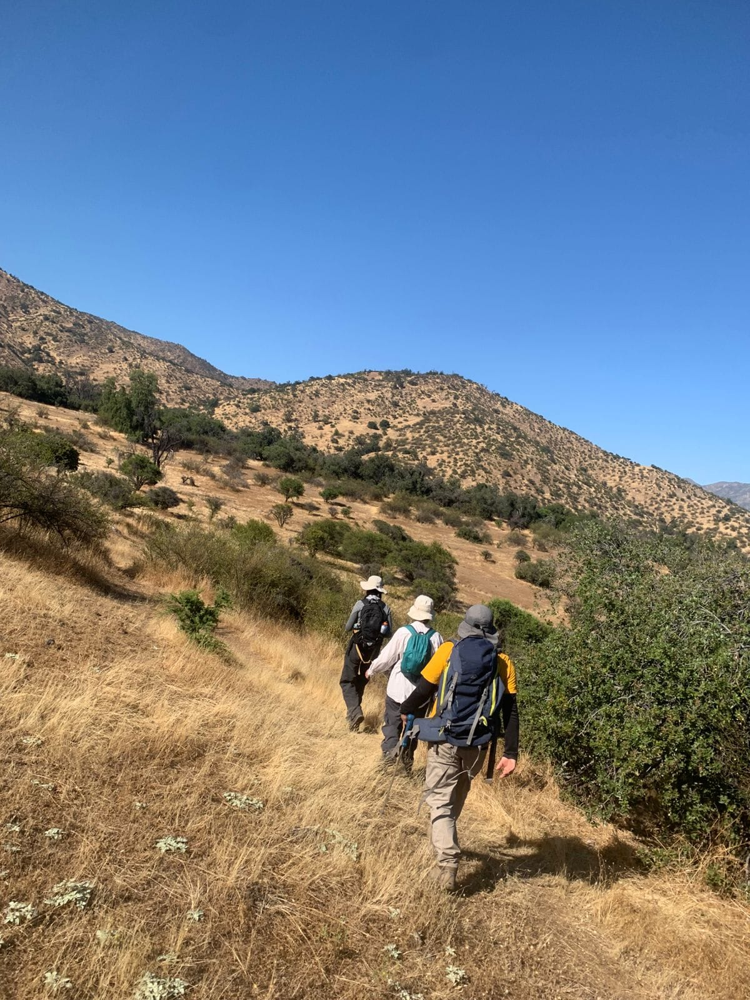
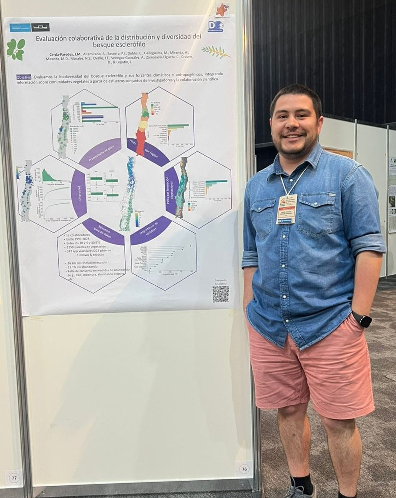

José Miguel
Cerda-Paredes, PhD
Ecología Funcional de Plantas,
Remote Sensing & Ciencia de Datos
Soy ecólogo y me interesa comprender cómo se pueden utilizar los datos para apoyar la conservación y la toma de decisiones. Mi trabajo combina la teoría ecológica con herramientas cuantitativas, centrándose en la ecología funcional, la modelación, el análisis espacial y la ciencia de datos. Creo firmemente en la ciencia abierta y colaborativa, y me gusta contribuir a proyectos que integran datos sobre biodiversidad para permitir la investigación a escalas espaciales y temporales más amplias.

Mis intereses
Diversidad funcional de plantas
Cómo varían los rasgos de las especies dentro de una comunidad, y qué dice esa variación sobre el funcionamiento del ecosistema.
Productos remotos
Información a nivel de píxel y su relación con la realidad.
Bases de datos
Colectar datos suficientes para poder generar información & conocimiento a partir de ellos.
Hoy por hoy
- Hoy Postdoc - Laboratorio de Espectro-radiometría y Teledetección Ambiental (SpecLab), Instituto de Ciencias Agrarias del Consejo Superior de Investigación y Ciencias (ICA-CSIC), Madrid, España.
- Sept. 2026 PhD en Data Science - Facultad de Ingeniería y Ciencias, Universdida Adolfo Ibáñez, Santiago, Chile.
- Ago. 2022 - Sept. 2026 Tesista de Doctorado - Data Observatory, Santiago, Chile.
Curriculum
vitae
Descargar CV en PDF

Formación
- 2022–2024PhD en Data Science, Universidad Adolfo Ibáñez, Santiago, Chile. Facultad de Ingeniería y Ciencias. Supervisores: Dr. Javier Lopatin y Dr. Dylan Craven.
- 2022Diplomado en Big Data y Machine Learning, Pontificia Universidad Católica de Chile, Santiago, Chile. Facultad de Ingeniería.
- 2020–2022MSc en Recursos Naturales, Pontificia Universidad Católica de Chile, Santiago, Chile. Facultad de Agronomía y Sistemas Naturales. Supervisores: Dra. Rosanna Ginocchio y Dr. José Miguel Fariña.
- 2013–2018Licenciatura en Ciencias Biológicas, Pontificia Universidad Católica de Chile, Santiago, Chile. Facultad de Ciencias Biológicas.
Experiencia
- 2026–hoyInvestigador postdoctoral, SpecLab (CSIC), Madrid, España. Proyecto: «Sistemas Integrados de Observación y Experimentos de Simulación para analizar las relaciones biodiversidad-función en ecosistemas de sabana».
- Análisis de las relaciones biodiversidad-función en ecosistemas.
- Desarrollo complementario de los Sistemas Integrados de Observación y Experimentos de Simulación (BOSSE).
- Desarrollo de un módulo del paquete pyBOSSE para simular interacciones planta-planta.
- 2018–hoyAnalista biológico, Santiago Programas de monitoreo marino «PROMNA» y «MAPA», sección Biota Intermareal, Celulosa Arauco.
- Gestión y ejecución de trabajo de campo: colecta de invertebrados de playas de arena en las regiones de Ñuble y Biobío.
- Liderazgo de un equipo de trabajo de 6 personas.
- Análisis de muestras: identificación taxonómica, tamaños corporales y métricas poblacionales.
- Análisis estadísticos y elaboración de informes.
- 2022–2026Asistente de investigación, Universidad Adolfo Ibáñez, Santiago, Chile. Levantamiento de datos para los proyectos «Efecto de la vegetación en la retroalimentación tierra-atmósfera en la zona mediterránea de Chile» [FONDECYT SA77210031] y «Upscaling Ecosystem Resilience to Climate Change in a Mediterranean ecosystem of Chile using Remote Sensing» [FONDECYT 11241088].
- Gestión y ejecución de trabajo de campo: monitoreo de parcelas de vegetación en ecosistemas mediterráneos y muestreo de plantas.
- Liderazgo de un equipo de trabajo de 4 personas.
- Análisis de muestras y medición de rasgos funcionales.
- 2022–2023Encargado de ecosistemas marinos, Centro de Información Territorial (UAI), Santiago, Chile. Servicio especializado en biodiversidad, licitación GCP-1001-07-OST-0138 (AMSA). Evaluación de servicios ecosistémicos marinos.
- Gestión y ejecución de trabajo de campo.
- Identificación y estimación visual de servicios ecosistémicos costeros en la zona centro de Chile.
- 2019Asistente de campo, Pontificia Universidad Católica de Chile, Santiago, Chile. Proyecto «Espectros de tamaño de las comunidades de invertebrados de los humedales costeros en Chile: el papel de las perturbaciones» [FONDECYT 11180668].
- Trabajo de campo: trampas pitfall, medición de salinidad y colecta de macroinvertebrados limnológicos.
- Procesamiento de muestras: identificación taxonómica, conteo de abundancias y mediciones bajo lupa.
- 2018–2022Encargado de laboratorio, Pontificia Universidad Católica de Chile, Santiago, Chile. Laboratorio de Ecología Comunitaria y Ecosistémica de la Interfase Mar-Tierra, Departamento de Ecología, Facultad de Ciencias Biológicas.
- Administración del laboratorio y trabajo de campo.
- Apoyo en el desarrollo de tesis de pre- y postgrado.
- Procesamiento de muestras: rasgos funcionales de plantas e isótopos estables de suelo y plantas.
Becas
- 2022–2024Tesista de doctorado, ANID Chile y Data Observatory Plant functional diversity: insights at different scales from field ecology and remote sensing.
- 2017Beca de pregrado de investigación de verano, Pontificia Universidad Católica de Chile Laboratorio de Ictiología (Dr. Patricio Ojeda).
Docencia
- 2016–2026Pontificia Universidad Católica de Chile
- Estadística, profesor encargado, pregrado (2025–2026)
- Fundamentos de Ecología y Evolución, profesor co-encargado, pregrado (2024–2026)
- Fundamentos de Ecología y Evolución, ayudante instructor, pregrado (2016–2024)
- Principios Ecológicos y Medio Ambiente, ayudante instructor, pregrado (2016–2025)
- Restauración Ecológica, ayudante instructor, pregrado (2022)
- Trabajo Experimental en Ecología, ayudante instructor, pregrado (2020)
- Vertebrados Marinos, ayudante instructor, pregrado (2016–2018)
- 2022–2023Universidad Adolfo Ibáñez
- Taller en Investigación y Desarrollo, ayudante instructor, postgrado (2023)
- Bioestadística, ayudante instructor, postgrado (2022–2023)
Supervisión
- 2026Camila Henríquez, pregrado, Universidad de Las Américas Análisis bibliométrico del uso de ciencia de datos en el diagnóstico y tratamiento de enfermedades equinas.
Habilidades
- Python (avanzado)
- R (avanzado)
- LaTeX
- SIG (QGIS)
- SQL
- Git y GitHub
- Análisis estadístico
- Modelamiento ecológico
- Diseño y ejecución de trabajo de campo
- Comunicación científica
Idiomas
- Español (nativo)
- Inglés (avanzado)
Con quién
he trabajado

-
Postdoc
- Javier Pacheco-Labrador Cerda-Paredes et al. (2026) [Preprint]
-
Doctorado
-
Javier Lopatin
(Supervisor doctorado) Sharma et al. (2026); Pérez-Giraldo et al. (2026); Cerda-Paredes et al. (2026) [Preprint]; Cerda-Paredes et al. (2026) [Preprint] -
Dylan Craven
(Supervisor doctorado) Pérez-Giraldo et al. (2026); Cerda-Paredes et al. (2026) [Preprint]; Cerda-Paredes et al. (2026) [Preprint] - Laura Pérez-Giraldo Pérez-Giraldo et al. (2026); Pérez-Giraldo et al. (2026);
-
Javier Lopatin
-
Magíster
-
Rosanna Ginocchio
(Supervisora magíster) Cerda et al. (2024) -
José Miguel Fariña
(Supervisor magíster) Cerda et al. (2024)
-
Rosanna Ginocchio
-
Pregrado
Pasado marino-
Patricio Ojeda
(Supervisor pregrado) Cerda et al. (2019); Cerda et al. (2021) - Mariana Díaz-Santana-Iturrios Cerda et al. (2021); Díaz-Santana-Iturrios et al. (2022)
-
Patricio Ojeda
Contribuciones
Artículos, preprints, presentaciones en congresos, bases de datos y código.

-
2026
The ecological and functional value of native bees in avocado (Persea americana) pollination Journal of Pollination Ecology.Artículo
-
2026
Environmental heterogeneity and spatial variation mediates plant diversity and ecosystem stability in mountain ecosystems of the Mediterranean Andes Ecography, e08305.Artículo
-
2026
PlantTraitNet: an uncertainty-aware multimodal framework for global-scale plant trait inference from citizen science data Proceedings of the AAAI Conference on Artificial Intelligence, 40, 39239–39248.Artículo
-
2024
Coexistence of Ambrosia chamissonis and Ammophila arenaria in coastal dunes in the Ñuble Region, Chile Flora, 310, 152447.Artículo
-
2022
Northeastern Pacific octopus beak shape for species-level detection Malacologia, 64(2), 169–184.Artículo
-
2021
Description and discrimination of sagittae otoliths of two sympatric labrisomid blennies Auchenionchus crinitus and Auchenionchus microcirrhis using morphometric analyses Journal of Sea Research, 173, 102063.Artículo
-
2019
Genetic structure analysis of Girella laevifrons populations in central Chile Journal of Applied Ichthyology, 35(5), 1147–1153.Artículo
-
2026
Parcelas-CL: a community-sourced vegetation dataset for multi-scale biodiversity monitoring in Chile Research Square.Preprint
- 2026 Preprint
-
2026
Bridging the gaps between field-based ecology and remote sensing to estimate plant functional diversity: a systematic review EGU26 General Assembly, Viena (Austria). Presentación virtual.Conferencia
-
2025
Functional diversity of plants in semi-arid ecosystems: influence of topographic complexity and elevation in the Mediterranean Andes of Chile International Symposium on Climate and Resilience (CR2), Viña del Mar (Chile). Póster. Libro de resúmenes (p. 83)Conferencia
-
2025
Collaborative assessment of the distribution and diversity of sclerophyllous forests I Reunión Trinacional de Ecología, Mendoza (Argentina). Póster. Libro de resúmenesConferencia
-
2025
Esclerófilo-CL: a database of sampling plots in the sclerophyllous forest in Chile V Reunión Bienal de la Sociedad de Ecología del Paisaje de Chile (IALE-Chile), Santiago (Chile). Oral. Libro de resúmenes (p. 56)Conferencia
-
2025
A comparative analysis of field-based ecology and remote sensing approaches to plant functional diversity BIOSPACE25, Frascati (Italia). Oral. PresentaciónConferencia
-
2023
Occurrence of dry spells in central Chile: historical record and projections in light of climate change I Congreso Data Science, Data Observatory, Santiago (Chile). Póster.Conferencia
-
2023
Plant trait diversity: bibliometric analysis of the gap between classical ecology and remote sensing International Symposium on Climate and Resilience (CR2), Viña del Mar (Chile). Póster. Libro de resúmenes (p. 419)Conferencia
-
2022
Coexistence of Ambrosia chamissonis and Ammophila arenaria in coastal dunes in the Ñuble Region, Chile LXV Reunión Anual de la Sociedad de Biología de Chile, Pucón (Chile). Póster. Libro de resúmenes (p. 69)Conferencia
-
2018
Connectivity of Girella laevifrons populations along the Chilean coast XXXVIII Congreso de Ciencias del Mar, Valdivia (Chile). Póster. Libro de resúmenes (p. 546)Conferencia
-
2026
Parcelas-CL Base de datos. Zenodo.Base de datos
-
2026
Functional diversity in ecology and remote sensing Software. Zenodo.Software
Pensamientos
Cargando entradas…